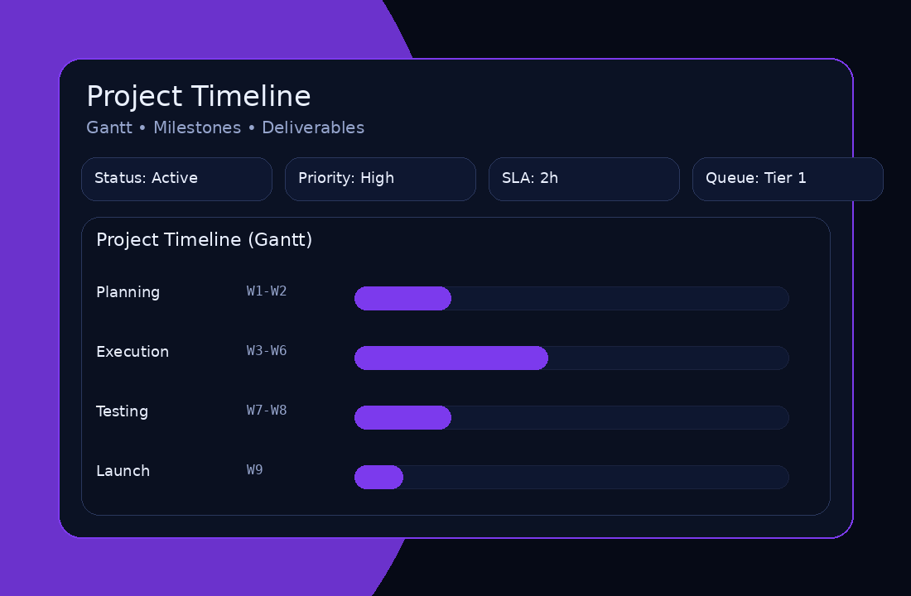
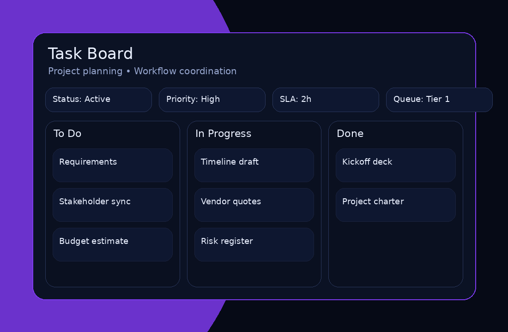
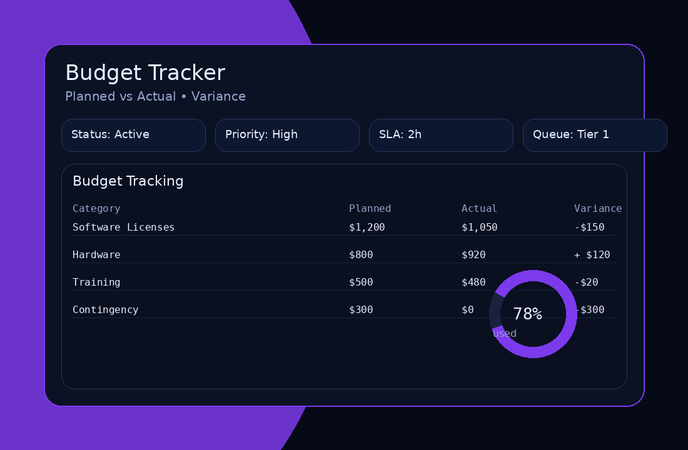
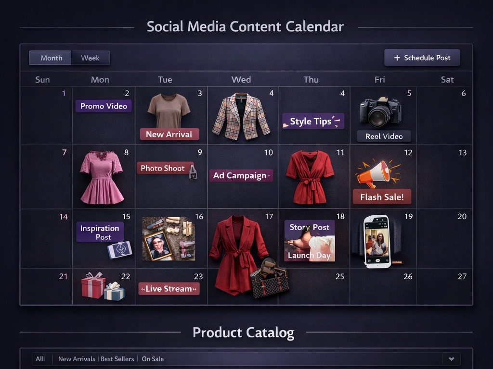
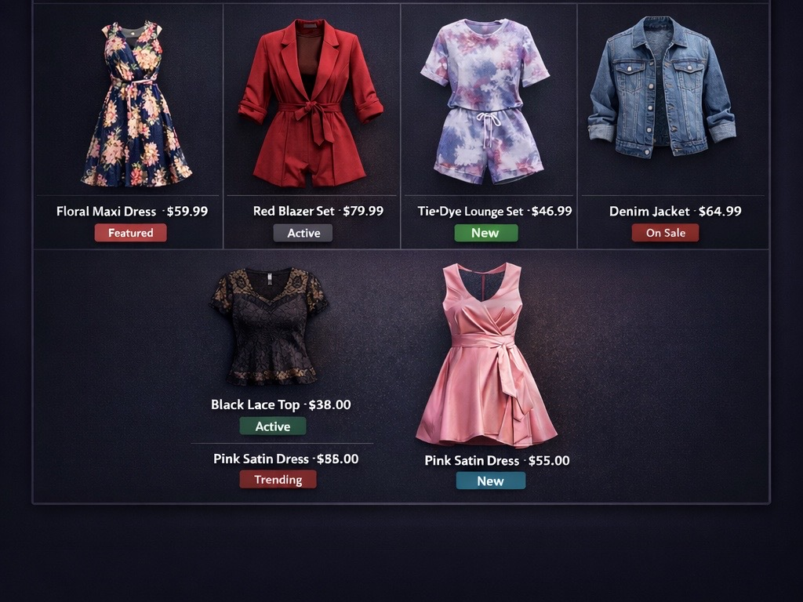

Project Coordination
Support project execution by managing timelines, task tracking, documentation, and operational logistics.
Project Coordination & Boutique Visual Examples
Project planning, budgeting, task boards, and boutique launch/branding workflows (portfolio mockups).
Project Timeline (phases + milestones)

Task Board (To-Do → In Progress → Done)

Budget / Spend Tracking

Social Media Content Calendar


Project Planning / Timeline Development

What I Do
- Track tasks, owners, and deadlines
- Write status updates and meeting notes
- Document workflows and SOPs
- Coordinate communication and follow-ups
How I Work
- Kanban boards (To-Do / Doing / Done)
- Clear action items and handoffs
- Priority + risk awareness
- Consistent updates to stakeholders
Projects
Project Planning & Scheduling
Define scope, milestones, timeline, and dependencies to keep delivery on track.
Stakeholder Communication
Run status updates, align priorities, and keep stakeholders informed and engaged.
Risk & Issue Management
Identify risks early, track issues, remove blockers, and drive solutions to closure.